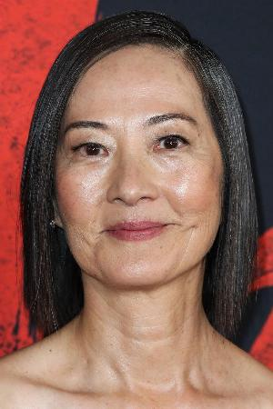

Rosalind Chao
→ Interpreta a Ye WenjieActriz estadounidense de origen chino conocida por sus roles en "Star Trek: Deep Space Nine" y "Mulan". Su interpretación de Ye Wenjie captura la complejidad de un personaje que debe cargar con el peso de una decisión que afectará a toda la humanidad. Chao aporta profundidad emocional y gravitas a este papel fundamental.